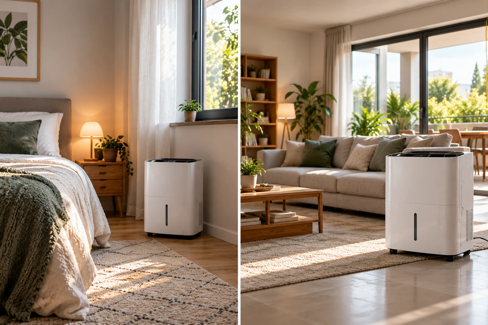

Menos de 16 L/día
Es la referencia que OCU da para estancias de este tamaño. Si la humedad es muy alta o secas ropa dentro, conviene no quedarse demasiado justo.
Los metros cuadrados ayudan, pero no bastan. La humedad real, la temperatura y el uso pueden hacer que dos habitaciones del mismo tamaño necesiten aparatos muy distintos.

Es la referencia que OCU da para estancias de este tamaño. Si la humedad es muy alta o secas ropa dentro, conviene no quedarse demasiado justo.
Segunda referencia clara de OCU para una estancia grande. Sigue siendo importante revisar temperatura, caudal de aire y uso.
No hay una conversión universal de m² a litros. Mira la superficie recomendada por el fabricante y, sobre todo, su rendimiento en condiciones parecidas a las de tu casa.
Estas cifras sirven como punto de partida. No convierten el tamaño de la habitación en una fórmula exacta, porque la carga de humedad cambia mucho entre viviendas.
Recomendación OCU para este rango de superficie.
OCU no da una cifra específica para este tramo en la guía consultada. Aquí tiene más sentido decidir según humedad, temperatura y uso que inventar un número exacto.
Recomendación OCU para estancias de este tamaño.
No extrapolamos una regla lineal. Comprueba superficie recomendada, caudal, temperatura de trabajo y extracción real.
Las filas marcadas como “zona intermedia” o “revisar modelo” son criterio editorial de Compra con Criterio; no son cifras publicadas por OCU.
La capacidad nominal suele medirse con aire muy cálido y húmedo. Cuando baja la temperatura o la humedad relativa, un deshumidificador de compresor extrae menos agua por día.
El MeacoDry Arete Two 20L es un buen ejemplo porque el fabricante publica el rendimiento bajo varias condiciones, no solo la cifra máxima.
A 20 °C y 60 % HR se queda en 8,5 L/día; a 20 °C y 80 % HR sube hasta 13,85 L/día. La máquina no ha cambiado: lo ha hecho el aire que entra en ella.
Dos habitaciones con 25 m² pueden necesitar capacidades distintas si una solo tiene condensación ligera y la otra recibe una colada diaria.
La colada añade una carga de humedad importante. Tiene sentido dar más peso a capacidad de extracción y caudal de aire.
Si partes de valores persistentemente elevados, un aparato ajustado al mínimo tardará más en bajar la humedad y trabajará durante más tiempo.
El aire no circula perfectamente por una vivienda con puertas, pasillos y estancias cerradas. Tratar una casa completa es distinto de tratar una única habitación abierta.
Usa las referencias OCU como punto de partida, no como una fórmula universal.
Si puedes, mide con un higrómetro. No es lo mismo 62 % que una estancia instalada durante semanas en 80 %.
Busca datos a temperaturas y humedades parecidas a las tuyas, no solo la cifra máxima del frontal de la caja.
Son escenarios orientativos para entender el proceso de decisión, no equivalencias rígidas entre metros y litros.
La referencia OCU de menos de 16 L/día encaja como punto de partida. Después priorizaríamos ruido, higrostato y buen funcionamiento a la temperatura habitual del dormitorio.
La banda OCU de 16–21 L/día es una referencia razonable. Si el salón comunica con otras estancias, miraríamos también caudal y distribución del aire.
Aunque la superficie sea menor, no elegiríamos solo por m². La carga de humedad extra puede justificar subir capacidad dentro de la gama doméstica.
Respuestas directas para no confundir capacidad nominal, depósito y tamaño de la habitación.
No. “20 L/día” se refiere a capacidad de extracción bajo unas condiciones concretas de ensayo. El depósito físico suele ser mucho más pequeño y puede necesitar varios vaciados.
No necesariamente. Más capacidad puede dar margen, pero también hay que valorar ruido, consumo, tamaño, caudal y la capacidad de regular automáticamente la humedad.
Depende de la distribución y de la circulación del aire. Un equipo situado en una habitación no trata igual una vivienda con puertas cerradas y pasillos largos que un espacio abierto.
Porque la extracción cae cuando el aire está más frío o menos húmedo. Las cifras máximas se publican bajo condiciones de ensayo concretas, como 30 °C y 80 % HR en varios modelos de 20 L/día.
Hemos separado expresamente las recomendaciones publicadas de nuestras orientaciones editoriales para no presentar una tabla inventada como si fuera una norma técnica.
La guía principal explica compresor, desecante y Peltier, además de ruido, drenaje, higrostato y usos habituales.